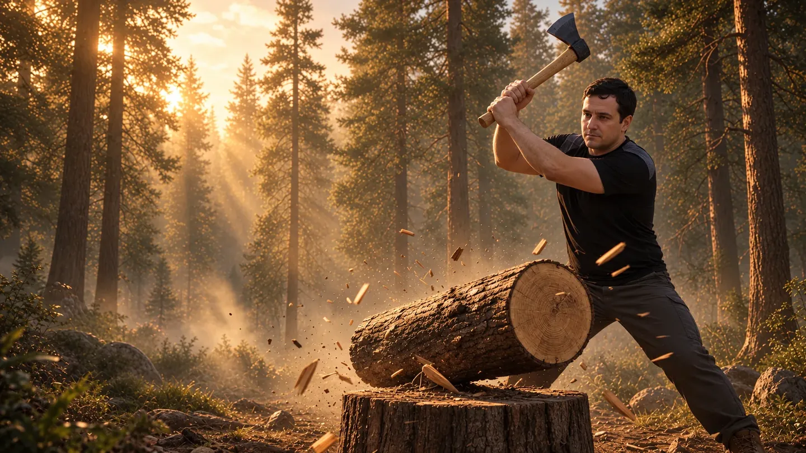

Codex
Backyard: Find the grain
8Greatout of 10
The comeback kid. Codex goes from 3.3 to an 8: “Biggest glow-up I’ve ever reviewed.”
- Gameplay
- 8
- Graphics
- 7
- Physics
- 8

One brief, four AI coding harnesses: Codex, Claude Code, DeepSeek and Gemini 4 Argon. Each builds the same backyard axe game. Gemini’s is still being built.
Watch
A short tour of Chopperman: meet Sergey and see the Assets v2 games by Codex, Claude Code and DeepSeek. The video was made before Gemini 4 Argon joined, so its game is not in it.
It starts only when you press play, and the sound is yours to turn on.
Quick intro · meet Sergey and the Codex, Claude Code and DeepSeek Assets v2 games (made before Gemini 4 Argon joined).
Grain & Gravity · Round Two
An IGN-style video review: about five minutes of play per game, scored out of 10 on gameplay, graphics and physics.
What was reviewed: these scores are for earlier classic (pre-assets) snapshots of the Codex, Claude Code and DeepSeek games. Their Assets v2, polish and co-op builds have not been reviewed or scored, and Gemini 4 Argon is still being built.
Backyard: Find the grain
The comeback kid. Codex goes from 3.3 to an 8: “Biggest glow-up I’ve ever reviewed.”
Backyard Log Splitter
Still the physics professor. Claude holds at a seven: smarter physics, but the new content added friction and a boss bug.
American Split
Confetti, cancelled. DeepSeek climbs from 5.3 to a six: big improvements, held back by a stuck round.
Not reviewed yet
In progress
Joined later and still being built, so there is no score yet. It gets the same prompts in the same order as the other three.
The main site has all four games (solo or two-player co-op with voice chat), every milestone side by side, the reviews and what each build cost.
Or play one right now: CodexClaudeDeepSeekGemini (in progress)